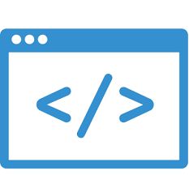

Skills:
- Programming:
- Adept: Java, C
- Intermediate: C++, POSIX, Assembly, Language, HTML5, CSS3, Bootstrap
- Novice: JavaScript, JQUERY, NodeJS, CUDA GPU Nividia
- Software Tools: GitHub, Eclipse, Amazon Web Services, GDB Debugger, UNIX/Linux command line, DOSBOX, XCode, Jenkins Automated Testing, JUnit testing, EclEmma code coverage, ExpandDrive, MicroOffice.
- Operating Systems: Mac O.S., Windows, Linux
- Upcoming Semester Topics: Java, JSP, JSF, JavaScript, JQuery, XML, HTML, R, SQL, Junit, Selenium, Cucumber, TomCat.
Notable NSCU Projects
A+ average
Flight Reservation System
- Description: Application to read flight seating chart and reserve a seat with customer preferences. GUI was implemented by teaching staff and backend logic by students.
- Duration: 4 Weeks
- Tech Used: Java, Eclipse, JUnit, Jenkins, GitHub, EclEmma Line Coverage
ReqKeeper
- Description: Requirement management system for software development. FSM based management for different stages of development.
- Duration: 4 weeks
- Tech Used: Java, Eclipse, JUnit, Jenkins, GitHub, EclEmma Line Coverage
Service Garage Application
- Description: The Service Garage Application queues customers and edits information of the customer via a GUI. Both front and Back end developed by students. Add Edit Remove customer while keeping a queue of tiered customers and managing available bays for service.
- Duration: 4 Weeks
- Tech Used: Java, Eclipse, JUnit, Jenkins, GitHub, EclEmma Line Coverage, GridBagLayout GUI
Ancestry Tree App
- Description: Ancestry Tree App reads ahnentafel files filled with family ancestors to build family tree data structures and determines relationships via recursive tree traversal algorithms.
- Duration: 4 weeks
- Tech Used: Java, Eclipse, JUnit, Jenkins, GitHub, EclEmma Line Coverage
Spell Checker Manager
- Description: This app reads words and checks them against most known words and prints information about questionable words and logistics of the program.
- Duration: 4 weeks
- Tech Used: Java, Eclipse, JUnit, Jenkins, GitHub, EclEmma Line Coverage
Transportation Manager
- Description: Transportation Manager App is a highway cost app that will print information about the minimum cost of certain highways or minimum asphalt using graphs and minimum spanning trees in regards to cost or asphalt.
- Duration: 4 weeks
- Tech Used: Java, Eclipse, JUnit, Jenkins, GitHub, EclEmma Line Coverage
Compresion Manager
- Description: This app compresses and decompresses text files efficiently with no data loss. Compressed texts includes the Bible, War and Peace and others in under a minute.
- Duration: 4 weeks
- Tech Used: Java, Eclipse, JUnit, Jenkins, GitHub, EclEmma Line Coverage
Server Client Communication
- Description: This App uses a server and multiple clients for communication using Posix API with authentication and encryption..
- Duration: 2 weeks
- Tech Used: Java, Eclipse, GNU debugger, POSIX API, RSA security
Point Counter Program
- Description: This App counts points inside circles with multiple threads each running on a Nividia GPU processer using CUDA software. Work is divided statically among threads.
- Duration: 2 weeks
- Tech Used: C, CUDA, Nividia GPU, POSIX API, SSH remote connection to use ARC Cluster, ExpanDrive
TCP/IP Client/Serve in C
- Description: Multi-threaded Unix client/server using TCP/IP sockets for communication. Clients enter a user name, post messages under that name and view a list of most recent messages.
- Duration: 2 weeks
- Tech Used: C, GNU Debugger, POSIX API, SSH remote connection, ExpanDrive, Linux Commands
MultiThreaded Ladder Program
- Description: This program lets multiple users add a word to a list and move it up and down. We implemented mutual exclusion to prevent race conditions.
- Duration: 2 weeks
- Tech Used: C, Linux Commands, POSIX API, SSH remote connection to use Linux machines, ExpanDrive, GNU debugger.
SLED text editor
- Description: Significantly limited text editor that will let you type, delete, undo and redo typing. Typing was dynamic and cursor position could be moved with arrow keys.
- Duration: 2 weeks
- Tech Used: C, GNU Debugger, Memory Leak detection.
Expression Tester
- Description: EXPR.asm asssembly code for x86 processor to read lines of high level language code and determines the validity of
the expression on each line.
- Duration: 1 week
- Tech Used: Assembly for x86 intel processor, DOSBOX x86 simulation environment and debugger
MAZE
- Description: For any assymetrical Maze, this program would guide a left turning mouse through the Maze.
- Duration: 1 week
- Tech Used: Assembly for x86 intel processor, DOSBOX x86 simulation environment and debugger
dent.c
- Description: This program reads txt from stdin and formats the text to indentations based on curly brackets.
- Duration: 1 week
- Tech Used: C, Linux Command line, GNU debugger, Xcode
Bit Compression
- Description: This program takes a text file and compresses it by bits.
- Duration: 1 week
- Tech Used: C, Linux Command Line, GNU debugger, Xcode
And several more Java, C and Assembly programs.
Udemy Online - Summer 2017
Blue Developer Directory Website
- Description: Full Static Website with local storage, geolocation, and video. Fictional web to find developers with certain skills.
- Duration: 1 week
- Tech Used: HTML5, CSS3, JavaScript
Daily Planner Web Application
- Description: Web App to add, edit, and remove daily tasks via local storage and JavaScript.
- Duration: 1/2 Week
- Tech Used: HTML5, CSS3, JQuery, JavaScript, BootStrap
Customer App
- Description: Small Web Application using node.js mongoDB to add and delete customers.
- Duration: 1 Week
- Tech Used: NodeJS, JavaScript, MongoDB, HTML, CSS
Self Guided
Personal Website
- Description: This Website
- Duration: 2 weeks
- Tech Used: HTML5, CSS3, JavaScipt, BootStrap, Amazon Web Services
